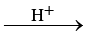
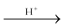
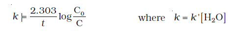

4.4 Pseudo First Order Reaction
The order of a reaction is sometimes altered by conditions. Consider a chemical reaction between two substances when one reactant is present in large excess. During the hydrolysis of 0.01 mol of ethyl acetate with 10 mol of water, amounts of the various constituents at the beginning (t = 0) and completion (t) of the reaction are given as under.
CH3COOC2H5 + H2O  CH3COOH + C2H5OH
t = 0 0.01 mol 10 mol 0 mol 0 mol
t 0 mol 9.9 mol 0.01 mol 0.01 mol
The concentration of water does not get altered much during the course of the reaction. So, in the rate equation
Rate = k′ [CH3COOC2H5] [H2O]
the term [H2O] can be taken as constant. The equation, thus, becomes
Rate = k [CH3COOC2H5]
where k = k′ [H2O]
and the reaction behaves as first order reaction. Such reactions are called pseudo first order reactions. Inversion of cane sugar is another pseudo first order reaction.
C12H22O11 + H2O  C6H12O6 + C6H12O6
Cane sugar Glucose Fructose
Rate = k [C12H22O11]
Example 4.9
Hydrolysis of methyl acetate in aqueous solution has been studied by titrating the liberated acetic acid against sodium hydroxide. The concentration of the ester at different times is given below.
| t/min | 0 | 30 | 60 | 90 |
| C/mol L–1 | 0.8500 | 0.8004 | 0.7538 | 0.7096 |
Show that it follows a pseudo first order reaction, as the concentration of water remains nearly constant (55 mol L–1), during the course of the reaction. What is the value of k′ in this equation?
Rate = k′ [CH3COOCH3][H2O]
Solution
For pseudo first order reaction, the reaction should be first order with respect to ester when [H2O] is constant. The rate constant k for pseudo first order reaction is

From the above data we note
| t/min |
t/min C/ mol L–1 |
k´/min–1 |
| 0 | 0.8500 | - |
| 30 | 0.8004 | 2.004 × 10–3 |
| 60 | 0.7538 | 2.002 × 10–3 |
| 90 | 0.7096 | 2.005 × 10–3 |
It can be seen that k´ [H2O] is constant and equal to 2.004 × 10-3 min–1 and hence, it is pseudo first order reaction. We can now determine k from
k´ [H2O] = 2.004 × 10–3 min–1
k´ [55 mol L–1] = 2.004 × 10–3 min–1
k´ = 3.64 × 10–5 moL–1 L min–1